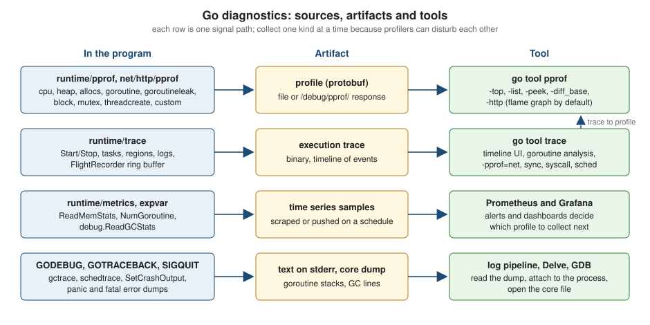

Profiling, Tracing and Diagnostics
|
This content was generated with the assistance of AI and should be verified against the official documentation before being relied on in production. |
This page is written against Go 1.27 (go1.27.2), checked on 2026-10-18; every go.mod shown has the line go 1.27.
A Go program in production is a black box until you ask it questions, and the standard toolchain ships almost
everything needed to ask them: a sampling CPU profiler, heap and allocation profiles, profiles of blocking and lock
contention, a profile of goroutines (and, since Go 1.27, of leaked goroutines), an execution tracer that records
every scheduling decision, a flight recorder that keeps the last seconds of that trace in memory, dumps of every
goroutine’s stack on a crash or a signal, a set of runtime metrics, and GODEBUG switches that make the runtime
narrate what it does. This page covers all of them: how to collect each signal, how to read it with go tool pprof
and go tool trace, which signal answers which question, what each costs, and how to expose the numbers to a
monitoring system.
It builds on Goroutines and the Scheduler (the
G-M-P model that the traces display), Memory
Management and Garbage Collection (what gctrace and the heap profile describe) and
Benchmarks, Fuzzing and synctest (the cheapest
place to take a profile). Related pages: Performance and PGO
(profiles feed the optimizer), net/http Clients and
Servers (where the debug endpoints live), Structured
Logging with slog, Sync and Atomics,
Channels and Select,
Context (goroutine leaks),
Testing, unsafe and Low-Level Programming,
cgo and C Interoperability and
Common Mistakes and Gotchas. Other pages on this
site cover the same ground from other angles: Rust
Debugging and Diagnostics and Rust Performance and
Profiling, Kubernetes Debugging and Troubleshooting
(reaching a debug port with kubectl port-forward), Kubernetes
Observability and the Prometheus page on
instrumenting applications (which includes the Go client
library).
Every example was compiled, vetted with go vet and run with Go 1.27.2 on an Apple M5 (macOS, arm64). The output
shown is real, but anything that depends on timing, addresses, byte counts or the machine (sample counts, durations,
0x… addresses, the share of time spent in runtime functions, goroutine numbers) differs on every run and every
machine; read the shapes and the commands, not the exact numbers. Where a long output is shortened, the text says so.
The module used by the examples has this go.mod:
module example.com/shelf
go 1.27The diagnostics map
The Go project’s Diagnostics guide sorts the available tools into four groups, and the same grouping organizes this page.
-
Profiling answers "where does the program spend CPU time, memory, goroutines or waiting time?". A profile is a set of sampled stack traces with weights. It aggregates over time and cannot tell you what happened at 14:03:07.
-
Tracing answers "what happened, in order?". The execution tracer records scheduler, garbage collector, system call and network events with nanosecond timestamps, plus the tasks, regions and log messages your own code adds. Distributed tracing across processes (OpenTelemetry and similar) is a separate, library-level topic; Go has no way to intercept function calls automatically, so spans are created by hand and propagated in a
context.Context. -
Debugging answers "why is this one execution wrong?" by pausing the program (Delve, GDB) or reading a post-mortem (stack dumps, core files).
-
Runtime statistics and events answer "is the program healthy right now?" with counters, gauges and histograms (
runtime/metrics,runtime.ReadMemStats,expvar) and with text the runtime prints on request (GODEBUG).

Which tool for which question
| Question | Signal | How you get it | Typical cost |
|---|---|---|---|
Which functions burn CPU? |
CPU profile |
|
Low at the default 100 Hz; measure before leaving it on |
Who allocates the most memory or objects? |
|
|
Sampled every 512 KiB by default; low |
What is holding memory right now? |
|
|
Low; reflects the last completed GC |
Why does the goroutine count grow? |
|
|
The goroutine profile briefly stops the world; the leak profile runs with a GC cycle |
Where do goroutines wait on locks or channels? |
|
Enable with |
Off by default; depends on the rate |
Why is latency high while CPU is idle? |
Execution trace |
|
About 1 to 2 percent CPU, plus a few MB per second of data |
Where did this goroutine get stuck? |
Stack dump |
|
Free until requested |
Why did the process die? |
Panic output, core dump |
|
Free until the crash |
Is the process healthy over time? |
Metrics |
|
Cheap; reading a few dozen values per scrape |
The Diagnostics guide gives a rule that matters for everything below: diagnostic tools can interfere with each other. Precise memory profiling skews CPU profiles, and goroutine blocking profiling affects the scheduler trace. Collect one kind of signal at a time when you need accurate numbers, and in production prefer to profile one replica out of many rather than all of them.
From symptom to signal
The flowchart turns the table into a decision procedure. Start from what you observe, not from the tool you know.
The rest of the page follows the same order: profiles first, then traces, then debuggers and crash output, then runtime statistics, and finally recipes that put several signals together.
Profiling with runtime/pprof
A profile is a collection of stack traces, each with a weight. The Go runtime writes profiles in the compressed
protocol-buffer format that Google’s pprof tool reads, and
go tool pprof is that tool, built into the toolchain. Producing a profile is the job of three packages:
-
runtime/pprofwrites profiles to anio.Writer: the programmatic API. -
net/http/pprofserves the same profiles over HTTP under/debug/pprof/, so a running service can be profiled without a restart. -
testingwrites them for tests and benchmarks (go test -cpuprofile).
The predefined profiles
runtime/pprof defines seven named profiles (look one up with pprof.Lookup(name) or list them all with
pprof.Profiles()), and the CPU profile, which streams to a writer and therefore has its own functions,
StartCPUProfile and StopCPUProfile.
| Profile | What a sample means | Enabled by default? |
|---|---|---|
|
A stack sampled by an operating-system profiling timer (a |
No: |
|
A sampled allocation site with the objects and bytes it allocated, reported as of the most recently completed
garbage collection. Default view |
Yes, sampling one allocation per |
|
The same data as |
Yes |
|
The stack of every live goroutine. |
Always available; collecting it briefly stops the world |
|
The stacks of goroutines that the runtime proves can never run again (Go 1.27; an experiment in Go 1.26). |
Available; a GC cycle runs when you write it |
|
The stack that led to the creation of each operating-system thread. |
Yes |
|
Stacks where goroutines waited on channels, mutexes, |
No: |
|
Stacks of the goroutines holding a contended |
No: |
Four more facts shape how you read them:
-
heapandallocsuse the same samples. They differ only in which of the four sample indexesgo tool pprofshows first:inuse_space,inuse_objects,alloc_spaceandalloc_objects. -
The
heapprofile is a sampling profile and lags behind: it describes the heap as of the last completed GC. Programs that write it from a test or a shutdown hook callruntime.GC()first so that it reflects the present. Request/debug/pprof/heap?gc=1to do that over HTTP. -
Since Go 1.23 the maximum stack depth recorded for the
allocs,mutex,block,threadcreateandgoroutineprofiles is 128 frames instead of 32; theprofstackdepthGODEBUGsetting changes it. -
Since Go 1.22 mutex profiles scale contention by the number of goroutines blocked on the mutex (100 goroutines blocked for 10 ms record one second of delay, not 10 ms) and include contention on runtime-internal locks.
You can also define your own profile (see Custom profiles), which is how packages track resources that must be closed.
A CPU profile from a standalone program
The simplest way to get a CPU profile out of any main package is the pattern from the runtime/pprof documentation:
a -cpuprofile flag that starts the profiler before the work and stops it on exit. The program below is a
deliberately wasteful catalogue search from the shelf module: for every query it lower-cases every title and
re-sorts the hits, and the store’s All method copies the whole map into a slice each time.
// Command search runs a deliberately wasteful catalogue search and can write
// CPU and allocation profiles.
package main
import (
"flag"
"fmt"
"log"
"os"
"runtime"
"runtime/pprof"
"sort"
"strings"
"example.com/shelf/catalog"
)
var (
cpuprofile = flag.String("cpuprofile", "", "write CPU profile to `file`")
memprofile = flag.String("memprofile", "", "write allocation profile to `file`")
)
func fill(n int) *catalog.MemStore {
s := catalog.NewMemStore()
for i := range n {
s.Put(catalog.Book{
ISBN: catalog.ISBN(fmt.Sprintf("978%010d", i)),
Title: fmt.Sprintf("Volume %d of the Shelf Chronicles", i),
})
}
return s
}
// search is wasteful on purpose: it lower-cases every title for every query
// and sorts the result.
func search(s catalog.Store, q string) []string {
var hits []string
for _, b := range s.All() {
if strings.Contains(strings.ToLower(b.Title), q) {
hits = append(hits, b.Title)
}
}
sort.Strings(hits)
return hits
}
func main() {
flag.Parse()
if *cpuprofile != "" {
f, err := os.Create(*cpuprofile)
if err != nil {
log.Fatal(err)
}
defer f.Close()
if err := pprof.StartCPUProfile(f); err != nil {
log.Fatal(err)
}
defer pprof.StopCPUProfile()
}
store := fill(20000)
total := 0
for i := range 500 {
total += len(search(store, fmt.Sprintf("volume %d", i)))
}
fmt.Println("hits:", total)
if *memprofile != "" {
f, err := os.Create(*memprofile)
if err != nil {
log.Fatal(err)
}
defer f.Close()
runtime.GC() // make the profile reflect the latest completed cycle
if err := pprof.Lookup("allocs").WriteTo(f, 0); err != nil {
log.Fatal(err)
}
}
}Source: runtime/pprof: StartCPUProfile
Build it (the profile needs the binary to symbolize the stacks, so keep the executable) and run it with the flags:
go build -o search ./ex/search
./search -cpuprofile cpu.prof -memprofile mem.profhits: 54390pprof.StartCPUProfile returns an error if a profile is already running, so check it. runtime.SetCPUProfileRate
exists, but the documentation advises using runtime/pprof or the testing flags instead. Now read the profile. The
-top view prints the functions with the most samples:
go tool pprof -top -nodecount=8 search cpu.profFile: search
Type: cpu
Time: 2026-10-18 03:28:09 CEST
Duration: 2.04s, Total samples = 1820ms (89.12%)
Showing nodes accounting for 1500ms, 82.42% of 1820ms total
Showing top 8 nodes out of 93
flat flat% sum% cum cum%
480ms 26.37% 26.37% 480ms 26.37% runtime.kevent
350ms 19.23% 45.60% 520ms 28.57% strings.ToLower
240ms 13.19% 58.79% 240ms 13.19% runtime.pthread_cond_wait
200ms 10.99% 69.78% 200ms 10.99% runtime.madvise
90ms 4.95% 74.73% 90ms 4.95% internal/bytealg.IndexByteString
50ms 2.75% 77.47% 50ms 2.75% runtime.pthread_cond_signal
50ms 2.75% 80.22% 50ms 2.75% runtime.pthread_kill
40ms 2.20% 82.42% 40ms 2.20% runtime.memmoveRead the header and the two pairs of columns carefully:
-
Duration: 2.04s, Total samples = 1.82s (89.12%)means the program ran for about two seconds and the profiler collected 1.82 seconds of CPU time across all threads. With several cores busy the total can exceed the duration. -
flat is the time spent in the function’s own instructions; cum (cumulative) also counts the functions it called.
sum%is the running total of the flat column. -
Hot code you wrote shows up next to runtime functions.
runtime.kevent,runtime.pthread_cond_signaland friends are the scheduler and the garbage collector’s background workers waking and parking threads (the names are platform specific: they are the macOS spellings, and Linux showsfutexandepoll_waitframes). A large share ofruntime.gcBgMarkWorker,runtime.gcDrainorruntime.mallocgcmeans the program spends much of its time allocating and collecting, which is a different problem from slow code.
The cumulative ordering shows the call tree from the top:
go tool pprof -top -cum -nodecount=12 search cpu.profShowing nodes accounting for 850ms, 46.70% of 1820ms total
Showing top 12 nodes out of 93
flat flat% sum% cum cum%
0 0% 0% 810ms 44.51% runtime.systemstack
0 0% 0% 750ms 41.21% main.main
20ms 1.10% 1.10% 750ms 41.21% main.search
0 0% 1.10% 750ms 41.21% runtime.main
350ms 19.23% 20.33% 520ms 28.57% strings.ToLower
0 0% 20.33% 480ms 26.37% runtime.gcStart.func4
480ms 26.37% 46.70% 480ms 26.37% runtime.kevent
0 0% 46.70% 480ms 26.37% runtime.netpoll
0 0% 46.70% 480ms 26.37% runtime.startTheWorldWithSema
0 0% 46.70% 250ms 13.74% runtime.findRunnable
0 0% 46.70% 250ms 13.74% runtime.mcall
0 0% 46.70% 250ms 13.74% runtime.park_mOutput shortened: the first lines of the header are omitted. Here runtime.gcDrain and runtime.gcBgMarkWorker.func2
are the concurrent mark phase, main.search is the code under study, and everything else is scheduling noise. Cut the
noise with -focus, which keeps only the samples whose stack passes through a function matching a regular expression:
go tool pprof -top -cum -focus='main\.search' -nodecount=8 search cpu.profFile: search
Type: cpu
Time: 2026-10-18 03:28:09 CEST
Duration: 2.04s, Total samples = 1.82s (89.12%)
Active filters:
focus=main\.search
Showing nodes accounting for 0.47s, 25.82% of 1.82s total
Showing top 8 nodes out of 41
flat flat% sum% cum cum%
0 0% 0% 0.75s 41.21% main.main
0.02s 1.10% 1.10% 0.75s 41.21% main.search
0 0% 1.10% 0.75s 41.21% runtime.main
0.35s 19.23% 20.33% 0.52s 28.57% strings.ToLower
0.01s 0.55% 20.88% 0.12s 6.59% internal/stringslite.Index
0 0% 20.88% 0.12s 6.59% strings.Contains (inline)
0 0% 20.88% 0.12s 6.59% strings.Index (inline)
0.09s 4.95% 25.82% 0.09s 4.95% internal/bytealg.IndexByteStringstrings.ToLower alone is 0.52 s of the 0.75 s spent in main.search. The -list command prints the annotated
source of functions matching a regular expression, with flat and cumulative time per line, which pins the cost to
line 39. (-trim_path shortened the file name in this listing.)
go tool pprof -list 'main.search' search cpu.profTotal: 1.82s
ROUTINE ======================== main.search in ex/search/main.go
20ms 750ms (flat, cum) 41.21% of Total
. . 36:func search(s catalog.Store, q string) []string {
. . 37: var hits []string
20ms 90ms 38: for _, b := range s.All() {
. 640ms 39: if strings.Contains(strings.ToLower(b.Title), q) {
. 20ms 40: hits = append(hits, b.Title)
. . 41: }
. . 42: }
. . 43: sort.Strings(hits)
. . 44: return hits
. . 45:}-peek shows the callers and callees of a function matching a pattern, which answers "who calls this hot function and
what does it spend its time on?":
go tool pprof -peek 'strings.ToLower' search cpu.profShowing nodes accounting for 1.82s, 100% of 1.82s total
----------------------------------------------------------+-------------
flat flat% sum% cum cum% calls calls% + context
----------------------------------------------------------+-------------
0.52s 100% | main.search
0.35s 19.23% 19.23% 0.52s 28.57% | strings.ToLower
0.08s 15.38% | strings.(*Builder).Grow
0.07s 13.46% | strings.(*Builder).WriteString (inline)
0.01s 1.92% | strings.(*Builder).String (inline)
0.01s 1.92% | strings.(*Builder).WriteByte (inline)
----------------------------------------------------------+-------------Output shortened. The commands you will use most are summarized here; go tool pprof -h prints them all.
| Command or flag | Purpose |
|---|---|
|
Table of functions; |
|
Source listing with per-line cost; needs the source files ( |
|
Callers and callees of matching functions. |
|
Text call tree, every sampled stack, or the raw profile with its period and sample types. |
|
Assembly annotated with samples. |
|
Keep, drop, hide or show nodes by regular expression. |
|
Choose the sample type: |
|
Filter or list samples by pprof label (see Labels: slicing a profile by request, tenant or route). |
|
Compare with another profile ( |
|
Write a (merged) profile in protobuf form: |
|
Interactive web interface; opens on the flame graph by default since Go 1.26. |
|
Call graph images (need Graphviz for some formats). |
|
With a URL source, how long to profile. |
Flame graphs and the web interface
go tool pprof -http=127.0.0.1:8080 search cpu.prof starts a local web server with the graph, flame graph, top, peek,
source and disassembly views. Go 1.26 changed the default view of this interface to the flame graph: requesting the
server’s root redirects through /ui/ to /ui/flamegraph (checked for this page against a running server).
In a flame graph each box is a function, its width is its cumulative cost, boxes stack in call order, and wide boxes
at the top of a tower are the cheapest places to start optimizing. The same flag accepts a URL, so
go tool pprof -http=127.0.0.1:8080 http://localhost:6060/debug/pprof/profile?seconds=30 collects and then opens the
profile in one step. Go 1.27 made go tool trace -http consistent with this tool: a bare port such as :6060
listens only on localhost, and to listen on every address you must say so explicitly (-http=0.0.0.0:6060).
Do not expose either interface to untrusted networks.
Heap and allocation profiles
The second flag of the program writes the allocs profile after a forced collection. The view that matters depends
on the question:
go tool pprof -sample_index=alloc_space -top -nodecount=5 search mem.profFile: search
Type: alloc_space
Time: 2026-10-18 03:28:11 CEST
Showing nodes accounting for 991.73MB, 99.06% of 1001.17MB total
Dropped 32 nodes (cum <= 5.01MB)
Showing top 5 nodes out of 9
flat flat% sum% cum cum%
538.54MB 53.79% 53.79% 538.54MB 53.79% example.com/shelf/catalog.(*MemStore).All
450.02MB 44.95% 98.74% 450.02MB 44.95% internal/bytealg.MakeNoZero
2.67MB 0.27% 99.01% 991.23MB 99.01% main.search
0.50MB 0.05% 99.06% 5.28MB 0.53% main.fill
0 0% 99.06% 997.67MB 99.65% main.mainAbout a gigabyte was allocated by a program whose live heap never exceeded a few megabytes, and the profile names the
two culprits: MemStore.All, which copies every Book into a fresh slice on each call (54 percent), and
internal/bytealg.MakeNoZero, the buffer that strings.ToLower allocates for each title. alloc_objects counts
allocations instead of bytes and is the right view when the cost is the number of allocations (each costs time
and garbage-collector work regardless of size):
go tool pprof -sample_index=alloc_objects -top -nodecount=4 search mem.profFile: search
Type: alloc_objects
Time: 2026-10-18 03:28:11 CEST
Showing nodes accounting for 9864556, 99.05% of 9959399 total
Dropped 33 nodes (cum <= 49796)
Showing top 4 nodes out of 8
flat flat% sum% cum cum%
9830849 98.71% 98.71% 9830849 98.71% internal/bytealg.MakeNoZero
32768 0.33% 99.04% 76506 0.77% main.fill
939 0.0094% 99.05% 9832291 98.72% main.search
0 0% 99.05% 9908798 99.49% main.mainNine million objects came from ToLower. The inuse_space view is for leaks and footprint, and here shows that
almost nothing survives:
go tool pprof -sample_index=inuse_space -top -nodecount=3 search mem.profFile: search
Type: inuse_space
Time: 2026-10-18 03:28:11 CEST
Showing nodes accounting for 4258.52kB, 100% of 4258.52kB total
Showing top 3 nodes out of 24
flat flat% sum% cum cum%
2562.16kB 60.17% 60.17% 2562.16kB 60.17% runtime.mallocgc
1184.27kB 27.81% 87.98% 1184.27kB 27.81% runtime/pprof.StartCPUProfile
512.08kB 12.02% 100% 512.08kB 12.02% compress/gzip.NewWriterLevelThree practical rules:
-
The profile is sampled (about one allocation per 512 KiB), so small allocation sites may be missing and totals are estimates. Raise the precision with
runtime.MemProfileRate = 1orgo test -memprofilerate=1at the cost of speed, and set it once, at the start ofmain, because the tools assume the rate is constant for the whole run. -
To find a leak, take two
heapprofiles minutes apart and compare them:go tool pprof -sample_index=inuse_space -diff_base first.prof second.prof. Growth that concentrates in one call stack is the leak. The HTTP form/debug/pprof/heap?seconds=30returns a delta profile for that interval directly (thesecondsparameter works forallocs,block,goroutine,heap,mutexandthreadcreate). -
A heap profile shows who allocated what is still live, not who holds it. Follow the stack to the allocation site and then reason about the references (a map that is never trimmed, a slice header pinning a large backing array, a goroutine that never returns). The memory page covers
GOGC,GOMEMLIMITand the collector itself.
Profiles in tests and benchmarks
For code that has a benchmark, the testing flags are the least effort: no instrumentation, no flags to add.
go test flag |
Effect |
|---|---|
|
CPU profile of the whole test binary run. |
|
Allocation profile written after the tests; |
|
Block profile; with the file set and no rate, every blocking event is recorded. |
|
Mutex profile; samples 1 in |
|
Execution trace of the run. |
|
Directory for these files (default: the current directory). |
|
Not a profile: adds |
Each of the profile flags also writes the compiled test binary (finder.test), which go tool pprof needs for
symbolization. The benchmark below measures the wasteful Search against an Index that lower-cases the titles once;
the test checks that both return the same titles.
// Package finder is a deliberately wasteful title search used to demonstrate
// profiling, next to a version that does the expensive work once.
package finder
import (
"sort"
"strings"
"example.com/shelf/catalog"
)
// Search returns the sorted titles that contain q (already lower case),
// ignoring case. It lower-cases every title on every call.
func Search(s catalog.Store, q string) []string {
var hits []string
for _, b := range s.All() {
if strings.Contains(strings.ToLower(b.Title), q) {
hits = append(hits, b.Title)
}
}
sort.Strings(hits)
return hits
}
// Index holds the titles and their lower-case forms, computed once.
type Index struct {
titles []string
lower []string
}
// NewIndex builds an Index from the store's current contents.
func NewIndex(s catalog.Store) *Index {
books := s.All()
ix := &Index{
titles: make([]string, len(books)),
lower: make([]string, len(books)),
}
for i, b := range books {
ix.titles[i] = b.Title
ix.lower[i] = strings.ToLower(b.Title)
}
return ix
}
// Search returns the sorted titles whose lower-case form contains q.
func (ix *Index) Search(q string) []string {
var hits []string
for i, l := range ix.lower {
if strings.Contains(l, q) {
hits = append(hits, ix.titles[i])
}
}
sort.Strings(hits)
return hits
}Source: Diagnostics: Profiling
package finder_test
import (
"fmt"
"slices"
"testing"
"example.com/shelf/catalog"
"example.com/shelf/ex/finder"
)
func newStore(n int) *catalog.MemStore {
s := catalog.NewMemStore()
for i := range n {
s.Put(catalog.Book{
ISBN: catalog.ISBN(fmt.Sprintf("978%010d", i)),
Title: fmt.Sprintf("Volume %d of the Shelf Chronicles", i),
})
}
return s
}
func TestIndexMatchesSearch(t *testing.T) {
s := newStore(2000)
want := finder.Search(s, "volume 12")
got := finder.NewIndex(s).Search("volume 12")
if !slices.Equal(got, want) {
t.Fatalf("index returned %d titles, search returned %d", len(got), len(want))
}
}
func BenchmarkSearch(b *testing.B) {
s := newStore(20000)
for b.Loop() {
finder.Search(s, "volume 12")
}
}
func BenchmarkIndexSearch(b *testing.B) {
ix := finder.NewIndex(newStore(20000))
for b.Loop() {
ix.Search("volume 12")
}
}Source: testing: Benchmarks
go test ./ex/finder -run '^$' -bench . -benchmem -count=1 -cpuprofile cpu.out -memprofile mem.out -o finder.testgoos: darwin
goarch: arm64
pkg: example.com/shelf/ex/finder
cpu: Apple M5
BenchmarkSearch-10 506 2430718 ns/op 2141962 B/op 20013 allocs/op
BenchmarkIndexSearch-10 3330 342484 ns/op 59760 B/op 12 allocs/op
PASS
ok example.com/shelf/ex/finder 2.724s-run '^$' skips the tests so that only benchmarks execute. The numbers that survive from one machine to the next are
the allocation columns: 20013 allocations per search became 12, and 2.1 MB per operation became 60 KB. The
time per operation is machine- and load-specific. To see where the saving came from, record both benchmarks as
separate profiles and diff them (a negative flat value means the function got cheaper in the second profile):
go test ./ex/finder -run '^$' -bench 'Search$' -benchtime=1000x -cpuprofile before.prof -o before.test
go test ./ex/finder -run '^$' -bench 'IndexSearch$' -benchtime=1000x -cpuprofile after.prof -o after.test
go tool pprof -top -nodecount=6 -focus='finder\.' -diff_base before.prof after.test after.profFile: after.test
Type: cpu
Time: 2026-10-18 03:27:05 CEST
Duration: 3.76s, Total samples = 3.50s (93.00%)
Active filters:
focus=finder\.
Showing nodes accounting for -0.21s, 6.00% of 3.50s total
Dropped 2 nodes (cum <= 0.02s)
Showing top 6 nodes out of 63
flat flat% sum% cum cum%
-0.09s 2.57% 2.57% -0.11s 3.14% internal/stringslite.Index
-0.07s 2.00% 4.57% -0.16s 4.57% strings.ToLower
-0.04s 1.14% 5.71% -0.04s 1.14% internal/bytealg.IndexByteString
0.03s 0.86% 4.86% 0.03s 0.86% runtime.memequal
-0.02s 0.57% 5.43% -0.24s 6.86% example.com/shelf/ex/finder.Search
-0.02s 0.57% 6.00% -0.02s 0.57% runtime.memmoveOutput shortened. A CPU profile of a benchmark run covers the whole process, including the setup that builds the
store and the garbage collector’s background work, which is why most of the samples fall outside finder and why the
-focus is needed. b.ResetTimer excludes setup from the benchmark timing, not from the profile. Use -benchtime=Nx
to run a fixed number of iterations so that two profiles are comparable, and see
Benchmarks, Fuzzing and synctest for b.Loop,
benchstat and noise control. b.Loop (Go 1.24) is what the benchmarks above use; the older b.N loop is described
on What’s New and Migrating Older Code.
Block and mutex profiles
CPU profiles are blind to waiting: a goroutine blocked on a lock uses no CPU. The mutex profile reports who held a contended lock, and the block profile reports where goroutines waited. Both are off by default because they cost something, and both need a rate:
-
runtime.SetMutexProfileFraction(n)samples on average 1 inncontention events (1records all,0turns it off, a negative value only returns the current setting). -
runtime.SetBlockProfileRate(n)samples about one blocking event pernnanoseconds spent blocked (1records every event, zero or less turns it off).
The program holds a lock while sleeping and feeds a slow consumer through an unbuffered channel:
// Command contend creates lock contention and channel blocking, then writes
// the mutex and block profiles.
package main
import (
"fmt"
"log"
"os"
"runtime"
"runtime/pprof"
"sync"
"time"
)
type counter struct {
mu sync.Mutex
n int
}
// slowInc holds the lock for far too long: the work belongs outside it.
func (c *counter) slowInc() {
c.mu.Lock()
defer c.mu.Unlock()
time.Sleep(2 * time.Millisecond)
c.n++
}
func writeProfile(name, file string) {
f, err := os.Create(file)
if err != nil {
log.Fatal(err)
}
defer f.Close()
if err := pprof.Lookup(name).WriteTo(f, 0); err != nil {
log.Fatal(err)
}
}
func main() {
runtime.SetMutexProfileFraction(1) // report every contention event
runtime.SetBlockProfileRate(1) // report every blocking event (ns)
var c counter
var wg sync.WaitGroup
for range 8 {
wg.Go(func() {
for range 10 {
c.slowInc()
}
})
}
results := make(chan int) // unbuffered: the receiver is slow
wg.Go(func() {
for range 5 {
results <- 1
}
close(results)
})
for range results {
time.Sleep(5 * time.Millisecond)
}
wg.Wait()
fmt.Println("count:", c.n)
writeProfile("mutex", "mutex.prof")
writeProfile("block", "block.prof")
}Source: runtime: SetMutexProfileFraction
count: 80go tool pprof -top -nodecount=4 contend mutex.profFile: contend
Type: delay
Time: 2026-10-18 03:28:12 CEST
Showing nodes accounting for 1.31s, 100% of 1.31s total
flat flat% sum% cum cum%
1.31s 100% 100% 1.31s 100% sync.(*Mutex).Unlock
0 0% 100% 1.31s 100% main.(*counter).slowInc
0 0% 100% 1.31s 100% main.main.func1
0 0% 100% 1.31s 100% sync.(*WaitGroup).Go.func1The mutex profile blames sync.(*Mutex).Unlock called from slowInc: the cost is attributed to the code that held
the lock while others waited, 1.31 s of accumulated delay across eight goroutines (the delay is summed over waiters,
so it exceeds the wall-clock time). Now the block profile of the same run:
go tool pprof -top -nodecount=5 contend block.profFile: contend
Type: delay
Time: 2026-10-18 03:28:12 CEST
Showing nodes accounting for 1505.49ms, 100% of 1505.49ms total
Dropped 1 node (cum <= 7.53ms)
Showing top 5 nodes out of 9
flat flat% sum% cum cum%
1310.70ms 87.06% 87.06% 1310.70ms 87.06% sync.(*Mutex).Lock (inline)
174.65ms 11.60% 98.66% 174.65ms 11.60% sync.(*WaitGroup).Wait
20.14ms 1.34% 100% 20.14ms 1.34% runtime.chansend1
0 0% 100% 1310.70ms 87.06% main.(*counter).slowInc
0 0% 100% 174.65ms 11.60% main.mainHere the blocked side is visible: sync.(*Mutex).Lock (87 percent) is the waiting, sync.(*WaitGroup).Wait is the
main goroutine waiting for everyone and is not a problem, and runtime.chansend1 is the producer waiting for the
slow receiver. When reading a block profile, discount the frames that are supposed to wait (a worker parked on its
job channel, WaitGroup.Wait, time.Sleep) and look for waits inside request paths. The fix for the mutex finding is
to shrink the critical section (the work that does not touch the shared state moves outside the lock); see
Sync and Atomics.
Goroutine profiles and leaks
/debug/pprof/goroutine and pprof.Lookup("goroutine") report every live goroutine. The debug parameter selects
the format:
debug |
Output |
|---|---|
|
Binary protobuf for |
|
Text, one entry per distinct stack with the number of goroutines that share it, for example
|
|
Text in the style of a crash dump: one block per goroutine with its state ( |
A goroutine count that only grows is the classic symptom of a leak, but the count is only a symptom. Go 1.26
introduced, as an experiment, a profile that proves some leaks, and Go 1.27 made it generally available (the
goroutineleakprofile GOEXPERIMENT was deleted). The runtime uses the garbage collector: if a goroutine is blocked
on a channel, mutex, sync.Cond or similar primitive that is not reachable from any goroutine that could still run,
nothing can ever wake it, so it is leaked. The program below has the textbook bug: an unbuffered channel, several
senders and a receiver that returns on the first error.
// Command leak starts goroutines that can never finish and asks the runtime
// for the goroutine leak profile.
package main
import (
"errors"
"fmt"
"os"
"runtime/pprof"
"time"
)
type result struct {
isbn string
err error
}
func lookup(isbn string) result {
if isbn == "bad" {
return result{isbn: isbn, err: errors.New("unknown ISBN")}
}
time.Sleep(20 * time.Millisecond) // a slow remote lookup
return result{isbn: isbn}
}
// lookupAll fans out one goroutine per ISBN. The channel is unbuffered, so
// when the first error makes the function return early, the remaining
// senders block forever.
func lookupAll(isbns []string) error {
ch := make(chan result)
for _, isbn := range isbns {
go func() { ch <- lookup(isbn) }()
}
for range isbns {
if r := <-ch; r.err != nil {
return r.err // the other senders leak
}
}
return nil
}
func main() {
err := lookupAll([]string{"bad", "9780134190440", "9781492077213"})
fmt.Println("lookupAll:", err)
// Give the slow lookups time to reach their blocked send. Writing the
// profile runs a garbage collection cycle that performs the detection.
time.Sleep(200 * time.Millisecond)
p := pprof.Lookup("goroutineleak")
p.WriteTo(os.Stdout, 1)
}lookupAll: unknown ISBN
goroutineleak profile: total 2
2 @ 0x102357f28 0x1022f2224 0x1022f1e38 0x1023ab96c 0x10235e034
# 0x1023ab96b main.lookupAll.func1+0x3b example.com/shelf/ex/leak/main.go:32Two goroutines are blocked forever on ch <- lookup(isbn). Passing 2 instead of 1 to WriteTo prints the full
stack dump in which leaked goroutines are marked in their state (output of that variant, filtered to the
relevant lines):
goroutine 6 [chan send (leaked)]:
main.lookupAll.func1()
example.com/shelf/ex/leak2/main.go:32 +0x3cDetails worth knowing:
-
Writing the profile runs a garbage collection cycle that performs the detection first;
Profile.Count()stays0until a write has done so, so read the profile withWriteToor the HTTP endpoint (/debug/pprof/goroutineleak, whichnet/http/pprofregisters since Go 1.27). -
Because the technique relies on reachability, the runtime can miss leaks where the primitive is reachable from a global variable or from the locals of a goroutine that is still runnable. A clean leak profile is not proof of absence; the plain goroutine profile still matters.
-
The fix for this program is to give the channel room for every sender (
make(chan result, len(isbns))); the same program with that one change reportsgoroutineleak profile: total 0(verified). Cancellation through acontextis the general cure, see Context and Concurrency Patterns. -
In tests, the same bugs can be caught earlier with
testing/synctest, which fails a test when goroutines in its bubble are blocked forever (see Benchmarks, Fuzzing and synctest).
Custom profiles
pprof.NewProfile(name) creates a profile of your own. It is meant for resources that must be released explicitly
(connections, file handles, loans): Add(value, skip) records the current stack against a value and Remove(value)
forgets it, so the profile always lists what is still open and who opened it. The convention is a package-path prefix
for the name; names must not contain spaces.
// Command custom registers a custom pprof profile that tracks open loan
// handles, a resource that must be closed explicitly.
package main
import (
"fmt"
"os"
"runtime/pprof"
)
// loans lists every Loan handle that has been opened and not yet closed.
// The convention is an "import/path." prefix to avoid name clashes.
var loans = pprof.NewProfile("example.com/shelf.open_loans")
// Loan is a handle that must be closed.
type Loan struct{ ISBN string }
func Open(isbn string) *Loan {
l := &Loan{ISBN: isbn}
loans.Add(l, 2) // 2 starts the recorded stack at the caller of Open
return l
}
func (l *Loan) Close() { loans.Remove(l) }
func main() {
a := Open("9780134190440")
b := Open("9781492077213")
_ = b
a.Close()
fmt.Println("open loans:", loans.Count())
// debug=1 prints the stacks as text, grouped by call site.
loans.WriteTo(os.Stdout, 1)
}Source: runtime/pprof: NewProfile
open loans: 1
example.com/shelf.open_loans profile: total 1
1 @ 0x1041dc525 0x104156c40 0x10418e744
# 0x1041dc524 main.main+0x64 example.com/shelf/ex/custom/main.go:28
# 0x104156c3f runtime.main+0x37f runtime/proc.go:302The stack is recorded where Open was called (the skip argument: in Go 1.27.2 0 includes the Add frame itself,
1 starts in Open, 2 starts at the caller of Open), and a, which was closed, is gone. Add panics if the
value is already present, and value must be usable as a map key and stays reachable until Remove, so use a pointer
and always pair the two calls (usually in Close). net/http/pprof serves custom profiles at
/debug/pprof/<name> automatically.
Labels: slicing a profile by request, tenant or route
A flat CPU profile of a server mixes every endpoint. pprof.Do attaches key-value labels to the calling goroutine
for the duration of a function (and to goroutines started inside it), and the CPU profiler copies them into each
sample. Two goroutines, two routes:
// Command labels attaches pprof labels so a CPU profile can be split by
// route.
package main
import (
"context"
"fmt"
"log"
"os"
"runtime/pprof"
"sync"
)
// spin burns CPU without allocating.
func spin(n int) uint64 {
h := uint64(14695981039346656037)
for i := range n {
h = (h ^ uint64(i)) * 1099511628211
}
return h
}
func handle(ctx context.Context, route string, n int) (sum uint64) {
// Labels are inherited by goroutines started inside the function.
pprof.Do(ctx, pprof.Labels("route", route), func(ctx context.Context) {
sum = spin(n)
})
return sum
}
func main() {
f, err := os.Create("labels.prof")
if err != nil {
log.Fatal(err)
}
defer f.Close()
if err := pprof.StartCPUProfile(f); err != nil {
log.Fatal(err)
}
defer pprof.StopCPUProfile()
ctx := context.Background()
var a, b uint64
var wg sync.WaitGroup
wg.Go(func() { a = handle(ctx, "GET /books", 900_000_000) })
wg.Go(func() { b = handle(ctx, "POST /loans", 300_000_000) })
wg.Wait()
fmt.Println("done", a != b)
}Source: runtime/pprof: Do
done truego tool pprof -tags labels.prof route: Total 1.25s of 1.26s (99.21%)
890ms (70.63%): GET /books
360ms (28.57%): POST /loansThe -tags view lists each label key with its share of the profile (the GET /books route did roughly two to three times
the work of POST /loans, as its larger loop count implies). Combine it with -tagfocus and -tagignore to analyze one route:
go tool pprof -top -nodecount=3 -tagfocus='route=POST /loans' labels.profFile: labels
Type: cpu
Time: 2026-10-18 03:28:26 CEST
Duration: 1.43s, Total samples = 1260ms (88.40%)
Active filters:
tagfocus=route=POST /loans
Showing nodes accounting for 360ms, 28.57% of 1260ms total
Showing top 3 nodes out of 7
flat flat% sum% cum cum%
320ms 25.40% 25.40% 360ms 28.57% main.spin (inline)
40ms 3.17% 28.57% 40ms 3.17% runtime.asyncPreempt
0 0% 28.57% 360ms 28.57% main.handleOutput shortened. Labels cost a little on every call, so attach them once per request in middleware rather than
inside inner loops, and keep the set of label keys small and the values low-cardinality (a route name, not a user
ID), because every distinct combination is a separate series in the profile. Since Go 1.27, modules with a go 1.27
(or newer) line print the goroutine’s labels in the header of tracebacks produced by runtime.Stack, debug.Stack
and SIGQUIT dumps:
// Command stacklabel prints the header of a goroutine dump taken inside a
// labelled region.
package main
import (
"context"
"fmt"
"runtime/debug"
"runtime/pprof"
"strings"
)
func main() {
labels := pprof.Labels("route", "POST /loans", "tenant", "acme")
pprof.Do(context.Background(), labels, func(context.Context) {
header, _, _ := strings.Cut(string(debug.Stack()), "\n")
fmt.Println(header)
})
}Source: Go 1.27 release notes: Runtime
goroutine 1 [running] {route: "POST /loans", tenant: acme}:That is useful for finding which request a stuck goroutine belongs to. The opt-out is GODEBUG=tracebacklabels=0,
which the release notes say will be kept indefinitely for programs whose labels hold information that must not appear
in a dump. Do not put secrets in labels.
Profiling a running service with net/http/pprof
Importing net/http/pprof for its side effect registers five handlers on http.DefaultServeMux: /debug/pprof/ (an
index that also serves every named profile), cmdline, profile (CPU), symbol and trace. Since Go 1.22 they accept
only GET (the httpmuxgo121 setting restores the old behaviour). The usual snippet from the documentation is:
import _ "net/http/pprof"
func init() {
go func() { log.Println(http.ListenAndServe("localhost:6060", nil)) }()
}This is a fragment (add the imports log, net/http and net/http/pprof; with them it compiles and vets cleanly).
Source: net/http/pprof
It works, and it is also the reason many services expose their profiler by accident: if the public server uses
DefaultServeMux, importing the package (even from a dependency) publishes the endpoints on the public port. The
safer pattern, in line with the advice in Idioms, Style
and Code Review to never use DefaultServeMux, is to register the handlers explicitly on a private mux served on a
loopback listener of its own. The program below does that and then calls the endpoints the way an operator would,
using a listener on 127.0.0.1:0 so that the example never touches a fixed port:
// Command debugsrv serves the pprof endpoints on a private mux and listener,
// then fetches a few of them the way an operator would.
package main
import (
"fmt"
"io"
"log"
"net"
"net/http"
"net/http/pprof"
"os"
"regexp"
"strings"
"time"
)
// debugMux registers the profiling handlers explicitly, so nothing leaks onto
// http.DefaultServeMux or the public API mux.
func debugMux() *http.ServeMux {
mux := http.NewServeMux()
mux.HandleFunc("GET /debug/pprof/", pprof.Index) // also serves every named profile
mux.HandleFunc("GET /debug/pprof/cmdline", pprof.Cmdline)
mux.HandleFunc("GET /debug/pprof/profile", pprof.Profile)
mux.HandleFunc("GET /debug/pprof/symbol", pprof.Symbol)
mux.HandleFunc("GET /debug/pprof/trace", pprof.Trace)
return mux
}
func get(base, path string) []byte {
resp, err := http.Get(base + path)
if err != nil {
log.Fatal(err)
}
defer resp.Body.Close()
b, err := io.ReadAll(resp.Body)
if err != nil {
log.Fatal(err)
}
fmt.Printf("GET %-34s -> %d, %s, %d bytes\n", path, resp.StatusCode, resp.Header.Get("Content-Type"), len(b))
return b
}
func main() {
// Bind to the loopback interface only; reach it with an SSH tunnel or
// kubectl port-forward, never through the public ingress.
ln, err := net.Listen("tcp", "127.0.0.1:0")
if err != nil {
log.Fatal(err)
}
srv := &http.Server{Handler: debugMux(), ReadHeaderTimeout: 5 * time.Second}
go srv.Serve(ln)
defer srv.Close()
base := "http://" + ln.Addr().String()
index := get(base, "/debug/pprof/")
names := regexp.MustCompile(`href='([a-z]+)\?debug=1'`).FindAllSubmatch(index, -1)
var list []string
for _, m := range names {
list = append(list, string(m[1]))
}
fmt.Println("profiles:", strings.Join(list, ", "))
gor := get(base, "/debug/pprof/goroutine?debug=1")
fmt.Println(strings.SplitN(string(gor), "\n", 2)[0])
get(base, "/debug/pprof/heap?gc=1")
get(base, "/debug/pprof/allocs?seconds=1")
cpu := get(base, "/debug/pprof/profile?seconds=1")
tr := get(base, "/debug/pprof/trace?seconds=1")
get(base, "/debug/pprof/goroutineleak?debug=1")
if err := os.WriteFile("fetched-cpu.prof", cpu, 0o600); err != nil {
log.Fatal(err)
}
if err := os.WriteFile("fetched-trace.out", tr, 0o600); err != nil {
log.Fatal(err)
}
}Source: net/http/pprof
GET /debug/pprof/ -> 200, text/html; charset=utf-8, 2852 bytes
profiles: allocs, block, cmdline, goroutine, goroutineleak, heap, mutex, profile, symbol, threadcreate, trace
GET /debug/pprof/goroutine?debug=1 -> 200, text/plain; charset=utf-8, 6441 bytes
goroutine profile: total 6
GET /debug/pprof/heap?gc=1 -> 200, application/octet-stream, 1773 bytes
GET /debug/pprof/allocs?seconds=1 -> 200, application/octet-stream, 332 bytes
GET /debug/pprof/profile?seconds=1 -> 200, application/octet-stream, 295 bytes
GET /debug/pprof/trace?seconds=1 -> 200, application/octet-stream, 13027 bytes
GET /debug/pprof/goroutineleak?debug=1 -> 200, text/plain; charset=utf-8, 31 bytesByte counts and the goroutine total vary per run. Notice the list of profiles taken from the index page: goroutineleak
is there in Go 1.27, alongside allocs, block, goroutine, heap, mutex and threadcreate, plus the three
special endpoints. The parameters are:
| Parameter | Meaning |
|---|---|
|
All named profiles: |
|
|
|
Return a delta profile: the difference over |
|
Collect for |
Operational notes that save an incident:
-
Reach it safely. Bind to
127.0.0.1(or a unix socket) and use an SSH tunnel orkubectl port-forwardto reach it, or put it behind authentication; see Kubernetes Debugging and Troubleshooting. The endpoints reveal your binary’s command line (cmdlinecan contain flags with secrets), the names of your functions and, withdebug=2, every goroutine’s state, and a request for a long CPU profile or trace occupies a goroutine and costs CPU, so an exposed endpoint is also a denial-of-service lever. -
Timeouts. The handlers extend the response write deadline by the requested number of seconds when the server has a
WriteTimeout, so a 30-second profile does not trip a 10-second write timeout. The server timeouts to set on your public listener are described in net/http Clients and Servers. -
One CPU profile at a time.
StartCPUProfilefails if another profile is running (the endpoint answers500with "Could not enable CPU profiling"), and a CPU profile and an execution trace can run at the same time, at some cost. -
Pull it with the tool.
go tool pprof http://127.0.0.1:6060/debug/pprof/profile?seconds=30fetches and opens the profile. For heap growth,go tool pprof -diff_baseagainst a profile saved earlier is the quickest comparison. Save the raw bytes withcurl -owhen the evidence must outlive the pod. -
Pick one replica when running many, and do not collect several profiles at once: they perturb each other.
-
The exposition of runtime state is not limited to pprof: the standard library’s
expvarpublishes variables at/debug/vars(see expvar).
Profiling in production continuously, rather than on demand, is possible with agents and hosted services built on the same endpoints and formats (community and commercial tools; not covered here). The Diagnostics guide’s advice is the same in every case: measure the profiler’s own overhead before enabling it everywhere, and sample a random replica.
Execution traces
A profile tells you how much; an execution trace tells you when and in what order. runtime/trace records
events for every goroutine and every P (processor): goroutine creation, blocking and unblocking, system calls,
network waits, garbage-collector phases and heap-size changes, with a nanosecond timestamp and a stack trace for most
of them. Use it for latency and utilization problems that profiles cannot show: a request that waits for a lock while
CPU is idle, poor parallelism, a garbage-collection pause that lines up with a latency spike, a network read that
dominates a handler. It is a poor tool for finding hot code; start with a CPU profile for that.
How the tracer evolved
Execution traces have been in Go for a long time, but the old ones were hard to use. The Go blog post More powerful Go execution traces describes the four problems and the fixes:
-
Overhead. Before Go 1.21 tracing cost between 10 and 20 percent CPU for many programs. Go 1.21 cut it to about 1 to 2 percent by unwinding stacks through frame pointers. That makes tracing cheap enough for much longer runs.
-
Scale. Go 1.22 shipped the new tracer: a redesigned format made of self-contained generations, so a trace can be split at any point and analyzed incrementally instead of loaded entirely into memory. The
go tool traceweb interface gained a thread-oriented view and full system-call durations, for traces recorded by Go 1.22 or newer. -
When to start. The same splitting makes the flight recorder possible (Go 1.25), a ring buffer of the most recent trace that you dump when something goes wrong (see The flight recorder (Go 1.25)).
-
Analysis. The experimental
golang.org/x/exp/tracepackage parses traces programmatically (a reader API). It is part of the experimental module and may change; the community tool gotraceui is a popular alternative viewer. -
Go 1.23 added tolerance for partially broken traces and an explicit flush of trace data when a program dies from an uncaught panic, so a trace taken during a crash is now usually recoverable.
Recording a trace
There are four ways to record, from least to most effort:
| Way | When to use it |
|---|---|
|
A test or benchmark. |
|
A running service with |
|
A standalone program or a bounded operation; |
|
Always on, dump on demand (next section). |
trace.Start returns an error if tracing is already enabled, and everything between Start and Stop is buffered and
written to the io.Writer. On top of the runtime’s own events you can add three kinds of user annotation, which are
what make a trace readable by someone who did not write the code:
-
A task (
trace.NewTask) is a logical operation, such as one request or one batch, that may span several goroutines. It travels in thecontext.ContextthatNewTaskreturns. -
A region (
trace.StartRegion,trace.WithRegion) is a time interval inside one goroutine, for instance "fetch" or "validate". Regions nest. -
A log message (
trace.Log,trace.Logf) is a timestamped, categorized note attached to a task.
The program imports four ISBNs concurrently and annotates the work:
// Command tracing records an execution trace of a small concurrent import with
// user tasks, regions and log messages.
package main
import (
"context"
"fmt"
"log"
"os"
"runtime/trace"
"sync"
"time"
)
type result struct {
isbn string
err error
}
func importBook(ctx context.Context, isbn string) result {
// A region is a time interval inside one goroutine.
defer trace.StartRegion(ctx, "importBook").End()
trace.WithRegion(ctx, "fetch", func() {
time.Sleep(10 * time.Millisecond) // pretend network
})
trace.WithRegion(ctx, "validate", func() {
time.Sleep(2 * time.Millisecond)
})
trace.Logf(ctx, "isbn", "imported %s", isbn)
return result{isbn: isbn}
}
func main() {
f, err := os.Create("trace.out")
if err != nil {
log.Fatal(err)
}
defer f.Close()
if err := trace.Start(f); err != nil {
log.Fatal(err)
}
defer trace.Stop()
// A task groups the work of one logical operation across goroutines.
ctx, task := trace.NewTask(context.Background(), "importBatch")
defer task.End()
isbns := []string{"9780134190440", "9781492077213", "9781784395438", "9780596009205"}
results := make(chan result)
var wg sync.WaitGroup
for _, isbn := range isbns {
wg.Go(func() { results <- importBook(ctx, isbn) })
}
go func() { wg.Wait(); close(results) }()
n := 0
for r := range results {
if r.err == nil {
n++
}
}
fmt.Println("imported:", n)
}Source: runtime/trace
imported: 4The trace is a binary file; to see what it holds without a browser, go tool trace -d=parsed prints every event as
text. Filtering for the annotations (times and thread numbers removed, first twelve lines; the order and the goroutine
and processor numbers vary between runs):
go tool trace -d=parsed trace.out | grep -E 'TaskBegin|RegionBegin|RegionEnd| Log 'P=8 G=1 TaskBegin ID=1 Parent=18446744073709551615 Type="importBatch"
P=7 G=22 RegionBegin Task=1 Type="importBook"
P=8 G=23 RegionBegin Task=1 Type="importBook"
P=8 G=23 RegionBegin Task=1 Type="fetch"
P=7 G=22 RegionBegin Task=1 Type="fetch"
P=8 G=24 RegionBegin Task=1 Type="importBook"
P=8 G=24 RegionBegin Task=1 Type="fetch"
P=8 G=25 RegionBegin Task=1 Type="importBook"
P=8 G=25 RegionBegin Task=1 Type="fetch"
P=6 G=25 RegionEnd Task=1 Type="fetch"
P=6 G=25 RegionBegin Task=1 Type="validate"
P=6 G=24 RegionEnd Task=1 Type="fetch"Four goroutines (G=22 to G=25 in this run) each opened an importBook region inside task 1, and the Log
lines carry the category and message passed to trace.Logf. For a profile derived from the trace, go tool trace
can extract four pprof-compatible blocking profiles with the -pprof flag: net (network blocking), sync
(synchronization blocking), syscall (system-call blocking) and sched (scheduler latency). The sync profile of this
run:
go tool trace -pprof=sync trace.out > sync.pprof
go tool pprof -top -nodecount=4 sync.pprofType: delay
Showing nodes accounting for 29.10ms, 100% of 29.10ms total
flat flat% sum% cum cum%
14.55ms 50.00% 50.00% 14.55ms 50.00% sync.(*WaitGroup).Wait
14.55ms 50.00% 100% 14.55ms 50.00% runtime.chanrecv2
0 0% 100% 14.55ms 50.00% main.main
0 0% 100% 14.55ms 50.00% main.main.func2Output shortened (the "Main binary filename not available" notice appears first). The main goroutine waited about
15 ms in WaitGroup.Wait for the four imports, and the channel receive waited about the same time for the first result:
roughly the 12 ms (10 ms "fetch" plus 2 ms "validate") that each import sleeps through, plus scheduling overhead.
Reading a trace in the browser
go tool trace trace.out converts the trace and starts a web server (by default on a random port on localhost; the
-http=addr flag chooses the address, and since Go 1.27 a bare :port listens only on localhost, as go tool pprof
does). Its start page links to these views:
| Page | What it shows |
|---|---|
View trace by proc / by thread |
The timeline: one row per P (or per OS thread, the view added in Go 1.22) with goroutine slices, plus GC, heap and
goroutine-count graphs. Navigate with |
Goroutine analysis |
Goroutines grouped by the function that started them, with the time each spent executing, waiting for a processor, blocked on synchronization or the network, in system calls and in garbage collection. The fastest way to see "these 5000 goroutines spent 90 percent of their life runnable but not running". |
Network blocking profile, Synchronization blocking profile, Syscall profile, Scheduler latency profile |
The same four profiles that |
User-defined tasks, User-defined regions |
Your |
Minimum mutator utilization |
The worst-case fraction of time the program (the "mutator") was not paused by garbage collection, for each window size: a way to quantify GC impact on latency. |
What to look for: gaps in the proc rows while goroutines are runnable (not enough Ps or heavy GC), a long row of one goroutine with others waiting behind it (serialization on a lock or channel), many short slices all starting after the same instant (a thundering herd), a goroutine repeatedly woken from the network poller with little work, and GC slices lining up with latency spikes. The Diagnostics guide shows the typical lock-contention signature: parallel work at first, then the processors idling while one goroutine works alone.
The flight recorder (Go 1.25)
An always-on trace is the ideal evidence, but a trace of a service that runs for days is far too large, and by the time
a rare slow request is noticed, the interesting seconds are gone. The flight recorder, added in Go 1.25 as
runtime/trace.FlightRecorder, solves this the way an aircraft’s recorder does: it continuously records the trace into
an in-memory ring buffer that holds only the most recent window, and you call WriteTo to snapshot that window to a
file when something interesting happens.
| API | Meaning |
|---|---|
|
Create a recorder from a |
|
Lower bound on the age of events kept. The flight recorder blog post suggests about twice the time window of the event you want to catch: for a 5-second timeout, ten seconds. Zero means "on the order of seconds". |
|
Upper bound on the buffered size, a hint that takes precedence over |
|
Begin and end recording; |
|
Write a snapshot of the current window to |
Only one flight recorder may be active at a time, although it may run together with a trace.Start consumer (the
documentation says the restriction may be removed in the future). Expect a few megabytes of trace per second of
execution, up to about 10 MB/s for a busy service, so size MaxBytes accordingly. The program wraps an HTTP handler:
when a request exceeds a limit, the handler snapshots the recent past of the whole process (once only, via
sync.Once), so the file holds what every other goroutine was doing while that request was slow.
// Command flight keeps the last moments of execution in memory and saves them
// when a request turns out to be slow.
package main
import (
"fmt"
"log"
"net/http"
"net/http/httptest"
"os"
"runtime/trace"
"sync"
"time"
)
// slowRequestSnapshot wraps next and, when a request takes longer than limit,
// writes the recent past of the whole process to a trace file (at most once).
func slowRequestSnapshot(fr *trace.FlightRecorder, limit time.Duration, file string, next http.Handler) http.Handler {
var once sync.Once
return http.HandlerFunc(func(w http.ResponseWriter, r *http.Request) {
start := time.Now()
next.ServeHTTP(w, r)
if time.Since(start) < limit {
return
}
once.Do(func() {
f, err := os.Create(file)
if err != nil {
log.Print(err)
return
}
defer f.Close()
n, err := fr.WriteTo(f)
log.Printf("slow request %s %s took %v; wrote %d bytes of trace, err=%v",
r.Method, r.URL.Path, time.Since(start).Round(10*time.Millisecond), n, err)
})
})
}
func main() {
fr := trace.NewFlightRecorder(trace.FlightRecorderConfig{
MinAge: 5 * time.Second, // keep at least the last five seconds
MaxBytes: 4 << 20, // but never more than about 4 MiB
})
if err := fr.Start(); err != nil {
log.Fatal(err)
}
defer fr.Stop()
fmt.Println("recording:", fr.Enabled())
mux := http.NewServeMux()
mux.HandleFunc("GET /books/{isbn}", func(w http.ResponseWriter, r *http.Request) {
if r.PathValue("isbn") == "slow" {
time.Sleep(300 * time.Millisecond) // the pathological request
}
fmt.Fprintln(w, "ok")
})
srv := httptest.NewServer(slowRequestSnapshot(fr, 200*time.Millisecond, "flight.out", mux))
defer srv.Close()
for _, id := range []string{"9780134190440", "slow", "9780441172719"} {
resp, err := http.Get(srv.URL + "/books/" + id)
if err != nil {
log.Fatal(err)
}
resp.Body.Close()
}
// Only one flight recorder may be active at a time.
second := trace.NewFlightRecorder(trace.FlightRecorderConfig{})
fmt.Println("second Start:", second.Start())
}recording: true
2026/10/18 03:28:24 slow request GET /books/slow took 300ms; wrote 17816 bytes of trace, err=<nil>
second Start: flight recorder already enabledThe program uses net/http/httptest, so it also runs without a free port. The 17 KB file flight.out is a normal trace:
go tool trace flight.out opens it, go tool trace -d=parsed flight.out prints it. Operational points:
-
Start the recorder at program start and call
WriteTofrom a trigger: a slow request, a failed health check, a watchdog that noticed a stalled queue, a panic handler, or an operator-facing endpoint. -
Rate-limit the dump. Writing a trace takes time and disk, and a flapping dependency can trigger it hundreds of times. The
sync.Onceabove is the bluntest limiter; a token bucket or "at most once per five minutes" is more usual. -
Keep the file somewhere that outlives the container, or upload it from the trigger, and put the request ID in the file name so that it can be matched to your logs from Structured Logging with slog.
-
The recorder cannot go back before it started: a request that began before
Starthas no history.
Crashes, tracebacks and stack dumps
When a Go program dies from an unrecovered panic or a fatal runtime error (a concurrent map write, a deadlock, running
out of memory), the runtime prints a traceback to standard error and exits with status 2. That text is the most
valuable diagnostic you will ever get for free, so it is worth knowing how to read it, how to get more of it and how
to keep it. This program panics in a goroutine started with sync.WaitGroup.Go, after registering a second
destination for crash output (see debug.SetCrashOutput):
// Command crash shows where the output of an unrecovered panic goes.
package main
import (
"fmt"
"log"
"os"
"runtime/debug"
"sync"
)
type shelf struct {
mu sync.Mutex
books map[string]int
}
func (s *shelf) lend(isbn string) {
s.mu.Lock()
defer s.mu.Unlock()
s.books[isbn]-- // books is nil: assignment to entry in nil map
}
func main() {
f, err := os.Create("crash.log")
if err != nil {
log.Fatal(err)
}
// The runtime duplicates the descriptor, so closing f is safe.
if err := debug.SetCrashOutput(f, debug.CrashOptions{}); err != nil {
log.Fatal(err)
}
f.Close()
fmt.Println("lending")
var s shelf
var wg sync.WaitGroup
wg.Go(func() { s.lend("9780134190440") })
wg.Wait()
fmt.Println("not reached")
}Source: runtime/debug: SetCrashOutput
Built with go build -trimpath so that file names are module paths, the first lines of the failure are (stderr; the
lending line is standard output):
panic: assignment to entry in nil map [recovered, repanicked]
goroutine 19 [running]:
sync.(*WaitGroup).Go.func1.1()
sync/waitgroup.go:251 +0x48
panic({0x104666230?, 0x10467d150?})
runtime/panic.go:859 +0x120
main.(*shelf).lend(0x0?, {0x1045a468d?, 0x0?})
example.com/shelf/ex/crash/main.go:20 +0xc4
main.main.func1()
example.com/shelf/ex/crash/main.go:37 +0x2c
sync.(*WaitGroup).Go.func1()
sync/waitgroup.go:258 +0x48
created by sync.(*WaitGroup).Go in goroutine 1Output shortened: the file and line of the last frame (created by, inside waitgroup.go) are cut.
The process exits with status 2 (echo $? prints 2). How to read it:
-
The first line is the panic value (
assignment to entry in nil map, a runtime error).[recovered, repanicked]is becauseWaitGroup.Gorecovers a panic from its function and panics again after cleaning up. Go 1.25 changed this line: a recovered and re-raised panic is no longer printed twice (formerlypanic: X [recovered]followed bypanic: X). -
goroutine 19 [running]:names the goroutine that panicked. In Go 1.23 and later the lines after the first line of a multi-line panic message are indented by a tab, so a message can no longer be confused with the stack. -
Frames read top to bottom from the point of the panic outward: the
paniccall itself (runtime/panic.go), then your code (lend, atmain.go:20), then the wrapper that started the goroutine. Offsets such as+0xc4are bytes into the function; arguments in the frame line show raw words, with a?when the value may be inaccurate because of register allocation. -
created by …is the goroutine’s parent, so you can tell which request or loop started a runaway goroutine.
GOTRACEBACK
The GOTRACEBACK environment variable controls how much is printed. runtime/debug.SetTraceback raises the level from
inside the program, but it cannot lower it below what the environment asks for.
GOTRACEBACK |
Behavior |
|---|---|
|
No goroutine stack traces at all: only the panic line. |
|
The stack of the current goroutine, with runtime-internal frames elided. All goroutines if the failure is inside the runtime or there is no current goroutine. |
|
The stacks of all user-created goroutines. |
|
Like |
|
Like |
|
Like |
The old numeric spellings 0, 1 and 2 mean none, all and system. Running the program above with
GOTRACEBACK=none leaves only the panic line:
panic: assignment to entry in nil map [recovered, repanicked]and GOTRACEBACK=crash ends with status 134 (128 plus signal 6, SIGABRT; core files were disabled with ulimit -c 0 in
this run so none was written). For services, all is a good default in the container’s environment: the other
goroutines often explain why the one that panicked got there.
debug.SetCrashOutput
Containers and supervisors capture standard error, but not always reliably, and log collectors may truncate or
interleave a multi-line panic. debug.SetCrashOutput(f, debug.CrashOptions{}) (Go 1.23) designates one extra file
that receives the panic message and traceback in addition to stderr. The runtime duplicates the file descriptor, so the
caller can close f at once, as the example does, and calling it again replaces the earlier file (nil removes it).
Its purpose is to let a parent process or a crash-reporting tool find the failure: pass an *os.File that is a
pipe to a supervisor, or a file in a persistent volume that the next start-up reads and reports. After the example
runs, crash.log holds the same text as the screen. Keep in mind that the crash can happen at any time, including in
the middle of other output, and that the file contains stack traces, so treat it like a log.
Asking a live process for its stacks
A hung process cannot panic. You can still make it describe itself:
-
Send
SIGQUIT(kill -QUIT <pid>, or press Ctrl+\ in a terminal). The runtime prints all goroutines to stderr and exits with status 2. In a container,docker kill --signal=QUIT <container>does the same, as doeskubectl exec <pod> — kill -QUIT 1when the image contains akillcommand. -
Fetch
/debug/pprof/goroutine?debug=2from a profiling endpoint: the same dump without killing the process. -
Call
debug.PrintStack()(to stderr),debug.Stack()orruntime.Stack(buf, all)from your own code, for example in a watchdog. -
Set
GODEBUG=tracebackancestors=Nto extend tracebacks,runtime.Stackincluded, with the stacks at which the goroutines were created, up toNgenerations: useful when a goroutine’s parent is the clue.
The next program cannot be detected as deadlocked by the runtime (a goroutine sleeping on a timer keeps the
detector quiet), so it simply hangs. Its goroutines run inside pprof.Do, so they carry a label:
// Command hang never finishes, but the runtime's deadlock detector stays
// silent because a timer is still pending. Send it SIGQUIT to see where
// every goroutine is stuck.
package main
import (
"context"
"fmt"
"os"
"runtime/pprof"
"sync"
"time"
)
func main() {
fmt.Println("started")
fmt.Fprintln(os.Stderr, "pid", os.Getpid())
labels := pprof.Labels("route", "POST /loans")
pprof.Do(context.Background(), labels, func(context.Context) {
var mu sync.Mutex
mu.Lock()
go func() {
mu.Lock() // blocked forever: the lock is never released
}()
go func() {
time.Sleep(time.Hour) // a pending timer disables the deadlock detector
}()
results := make(chan string) // nobody ever sends
fmt.Println(<-results)
})
}Built with -trimpath, started in the background and sent SIGQUIT after a second. The dump begins with SIGQUIT: quit
and a goroutine 0 for the thread that received the signal, then lists every goroutine, runtime ones included, and ends
with a register dump. The user goroutines, with runtime frames and the program counters removed, were:
goroutine 1 [chan receive] {route: "POST /loans"}:
main.main.func1({0x102b2e148?, 0x3c4aa690e1e0?})
example.com/shelf/ex/hang/main.go:31
main.main()
example.com/shelf/ex/hang/main.go:20
goroutine 6 [sync.Mutex.Lock] {route: "POST /loans"}:
main.main.func1.1()
example.com/shelf/ex/hang/main.go:24
created by main.main.func1 in goroutine 1
example.com/shelf/ex/hang/main.go:23
goroutine 7 [sleep] {route: "POST /loans"}:
time.Sleep(0x34630b8a000)
main.main.func1.2()
example.com/shelf/ex/hang/main.go:27
created by main.main.func1 in goroutine 1
example.com/shelf/ex/hang/main.go:26Output edited: runtime frames, fp, sp and pc columns removed. The state in brackets is the diagnosis:
chan receive is main waiting for a send that never comes, sync.Mutex.Lock is a goroutine stuck on a lock nobody
releases, sleep is a timer. The label {route: "POST /loans"} in each header is the Go 1.27 traceback-labels
feature (it also appears for the goroutines started inside pprof.Do, which inherit the label).
The states you will meet most:
| State in the header | Meaning |
|---|---|
|
On a processor, or ready and waiting for one. Many |
|
Blocked on a channel operation. A nil channel adds |
|
Blocked on a |
|
Parked in the network poller waiting for a socket or pipe. |
|
In a system call, possibly for a long time (a blocking disk or |
|
In |
|
Runtime goroutines or the garbage collector pacing the mutator. Normal in a |
|
Appended: how long a goroutine has been waiting (shown only after a minute). |
Two fatal errors that print a dump of their own and cannot be recovered: fatal error: all goroutines are asleep -
deadlock! (every goroutine is blocked and no timer or I/O could wake them, detected by the runtime but only if no
other source of progress exists) and fatal error: concurrent map writes (a data race caught by the map
implementation). The hang example above is exactly what the deadlock detector does not see, which is why the goroutine and
leak profiles matter. For races, build with -race and read
The Memory Model and Data Races.
Debuggers: Delve and GDB
A debugger is the tool for "why is this one execution wrong?": stop at a line, inspect variables, step. For programs
built with the standard toolchain, the practical choice is Delve (dlv), a community debugger written for Go that
understands goroutines, channels, maps, slices, interfaces and closures. The Go project’s own GDB page says plainly that
Delve is a better alternative to GDB and that GDB is not a reliable debugger for Go programs, particularly concurrent
ones, though it can be useful for debugging cgo code or the runtime itself. IDEs (VS Code with the Go extension, GoLand)
drive Delve through its DAP or JSON-RPC interfaces, so most developers never type dlv directly.
Neither Delve nor GDB is installed on the machine used for this page, so the commands below are not run; they are checked against the Delve and Go documentation.
# Debug the CLI from the shelf module with arguments after "--"
dlv debug ./cmd/shelf -- search --query dune
# Debug one test
dlv test ./catalog -- -test.run TestParseISBN
# Run a prebuilt binary under the debugger
dlv exec ./shelfd
# Attach to a running process (needs permission to ptrace it)
dlv attach 12345
# Headless server for a remote or IDE client
dlv debug ./cmd/shelfd --headless --listen=127.0.0.1:2345 --api-version=2
dlv connect 127.0.0.1:2345
# Post-mortem: open a core file with the binary that produced it
dlv core ./shelfd core.12345Source: Delve
The commands inside the (dlv) prompt that matter for Go: break (b) with file.go:line or a function name,
continue (c), next (n), step (s), stepout, print (p) and locals, args, bt for the stack,
goroutines to list them and goroutine N to switch to one, threads, list for source, condition to make a
breakpoint conditional, tbreak for a one-shot breakpoint, restart, and exit. Switching goroutine with
goroutine N followed by bt is the equivalent of reading one block of a SIGQUIT dump, but with variables available.
Optimized code is hard to debug: the compiler inlines functions and keeps variables in registers, so a breakpoint may
land in surprising places and a variable may read as <optimized out>. The Diagnostics guide’s remedy is to build the
code you debug without optimization: go build -gcflags=all="-N -l" (-N disables optimizations, -l disables
inlining). dlv debug and dlv test do this for you. To debug an optimized production binary, the guide mentions
-gcflags="-dwarflocationlists=true", which adds DWARF location lists so that debuggers can follow values through
registers (introduced in Go 1.10). Release builds that pass -ldflags=-w omit the DWARF data entirely, and then no
debugger can show source-level information.
GDB works with the DWARF data that the gc toolchain emits on Linux, macOS, FreeBSD and NetBSD, and loads a Python
extension script from the Go distribution (runtime-gdb.py) that adds info goroutines, goroutine <n> <command>,
pretty printers for strings, slices, maps and channels, and an iface helper. The Go documentation presents its
instructions "as a guide to how to use GDB when it works, not as a guarantee of success". Its listed commands
(list, break file.go:line, bt, info locals, p variable) are the usual GDB ones. Gccgo has native GDB support.
Core dumps and post-mortem debugging
A core dump is the memory image of a dead process. It lets you reproduce the final state of a crash that you never saw live. Go programs do not write one by default (they exit with status 2); to get one:
-
Allow it in the shell or the service manager:
ulimit -c unlimited(orLimitCORE=infinityin a systemd unit, or the equivalent container setting). On Linux, check/proc/sys/kernel/core_patternto see where cores go. -
Run the program with
GOTRACEBACK=crash, so the runtime ends withSIGABRTinstead of a normal exit. -
Open the file with the same binary that produced it:
dlv core ./shelfd core.12345, orgdb ./shelfd core.12345. Keep the exact binary (and its build ID or version) next to every core file;go version -m ./shelfdshows the Go version and module versions embedded in it.
Cores are large and contain everything in memory, including secrets, so apply the same access rules as to backups.
In containers, the host’s core_pattern applies, which is why teams often prefer debug.SetCrashOutput and the flight
recorder for the common cases and keep cores for the rare, hard ones. For a quick look at the heap of a live process
without a debugger, debug.WriteHeapDump(fd) writes the format described at the heap dump format
and stops the world while doing it, so write to a file, never to a pipe or socket whose other end is in the same
process.
Runtime statistics and metrics
Profiles and traces are for investigations. For monitoring you want numbers that are cheap to read often.
runtime/metrics
runtime/metrics (Go 1.16) is the supported, stable interface to runtime statistics. Each metric has a name made of a
slash-separated path and a unit (/gc/heap/live:bytes), a kind (a 64-bit integer, a float, or a histogram), and a flag
that says whether it is cumulative. metrics.All() lists what the running toolchain supports, metrics.Read fills
a slice of metrics.Sample values, and a name that the toolchain does not know comes back as KindBad rather than
failing, which keeps code that asks for newer metrics working on older runtimes.
// Command metrics reads a few runtime/metrics samples and prints them.
package main
import (
"fmt"
"runtime/metrics"
"sort"
"strings"
)
func main() {
// Discover what this toolchain offers; the list changes between releases.
all := metrics.All()
counts := map[string]int{}
for _, d := range all {
counts[strings.SplitN(d.Name[1:], "/", 2)[0]]++
}
var groups []string
for g := range counts {
groups = append(groups, g)
}
sort.Strings(groups)
for _, g := range groups {
fmt.Printf("/%s/...: %d metrics\n", g, counts[g])
}
// Read three by name. The slice can be reused between calls.
samples := []metrics.Sample{
{Name: "/gc/gogc:percent"},
{Name: "/gc/gomemlimit:bytes"},
{Name: "/sched/goroutines/waiting:goroutines"},
{Name: "/sched/latencies:seconds"},
{Name: "/no/such/metric:bytes"},
}
metrics.Read(samples)
for _, s := range samples {
switch s.Value.Kind() {
case metrics.KindUint64:
fmt.Printf("%-38s uint64 %d\n", s.Name, s.Value.Uint64())
case metrics.KindFloat64Histogram:
h := s.Value.Float64Histogram()
var n uint64
for _, c := range h.Counts {
n += c
}
fmt.Printf("%-38s histogram, %d buckets, observations > 0: %t\n", s.Name, len(h.Counts), n > 0)
case metrics.KindBad:
fmt.Printf("%-38s not supported by this toolchain\n", s.Name)
}
}
}Source: runtime/metrics: Read
/cgo/...: 1 metrics
/cpu/...: 11 metrics
/gc/...: 26 metrics
/godebug/...: 42 metrics
/memory/...: 14 metrics
/sched/...: 13 metrics
/sync/...: 1 metrics
/gc/gogc:percent uint64 100
/gc/gomemlimit:bytes uint64 9223372036854775807
/sched/goroutines/waiting:goroutines uint64 5
/sched/latencies:seconds histogram, 162 buckets, observations > 0: true
/no/such/metric:bytes not supported by this toolchainThe first seven lines count the metrics per top-level group in Go 1.27.2; the counts change from release to release.
/gc/gogc:percent and /gc/gomemlimit:bytes report the current settings (GOGC 100, no memory limit is the maximum
int64), and the waiting-goroutine count and the histogram observation flag are sampled values that differ per run.
Reuse the []Sample slice between reads to avoid allocation. Histogram samples hand you a Float64Histogram whose
Counts and Buckets you must copy if you keep them past the next Read.
The metrics that are worth putting on a dashboard or an alert:
| Metric | Meaning | Look for |
|---|---|---|
|
Live goroutines. Since Go 1.26 |
A count that climbs and never falls: a leak. |
|
Histogram of the time goroutines spent runnable before they ran. |
A fat tail means too few Ps, CPU throttling or heavy GC. |
|
Histograms of stop-the-world time (Go 1.22; the older |
Pause outliers that match latency spikes. |
|
Live heap after the last collection and the size that triggers the next. |
Live heap rising across cycles: a leak or a cache without bounds. |
|
How often the collector ran and how much CPU it used. |
GC taking a large fraction of |
|
Everything the runtime has mapped. |
Compare with the container limit and |
|
Cumulative time goroutines spent blocked on mutexes. |
A rising rate: take a mutex profile. |
|
Counts how often a |
Non-zero after an upgrade: you depend on an old behavior. |
The older runtime.ReadMemStats and debug.ReadGCStats still work, but
ReadMemStats stops the world briefly and mixes gauges with cumulative counters; prefer runtime/metrics for new
code. runtime.NumGoroutine returns the live goroutine count with no setup:
// Command memstats compares runtime.ReadMemStats, debug.ReadGCStats and
// runtime.NumGoroutine before and after some work.
package main
import (
"fmt"
"runtime"
"runtime/debug"
"sync"
)
var retained [][]byte
func main() {
var before, after runtime.MemStats
runtime.ReadMemStats(&before)
for range 64 {
retained = append(retained, make([]byte, 1<<20)) // keep 64 MiB alive
}
var stop sync.WaitGroup
release := make(chan struct{})
for range 100 {
stop.Go(func() { <-release })
}
fmt.Println("goroutines:", runtime.NumGoroutine())
runtime.GC()
runtime.ReadMemStats(&after)
fmt.Println("HeapAlloc grew by at least 64 MiB:", after.HeapAlloc-before.HeapAlloc >= 64<<20)
fmt.Println("completed GC cycles went up:", after.NumGC > before.NumGC)
fmt.Println("HeapObjects live:", after.HeapObjects > 0, "Mallocs - Frees = live objects:",
after.Mallocs-after.Frees == after.HeapObjects)
var gc debug.GCStats
debug.ReadGCStats(&gc)
fmt.Println("GCStats.NumGC matches MemStats.NumGC:", int64(after.NumGC) == gc.NumGC)
close(release)
stop.Wait()
fmt.Println("goroutines after release:", runtime.NumGoroutine())
runtime.KeepAlive(retained)
}Source: runtime: ReadMemStats
goroutines: 101
HeapAlloc grew by at least 64 MiB: true
completed GC cycles went up: true
HeapObjects live: true Mallocs - Frees = live objects: true
GCStats.NumGC matches MemStats.NumGC: true
goroutines after release: 1The output deliberately prints facts, not magnitudes: that the heap grew by at least the 64 MiB the program retained, that
a collection ran, that Mallocs - Frees equals HeapObjects, that the two APIs agree on the number of cycles, and
that the 100 parked goroutines (plus main) are counted and then disappear after they are released.
expvar
The expvar package (pkg.go.dev/expvar) publishes named variables as JSON at
/debug/vars. expvar.NewInt, NewFloat, NewString, NewMap and Func create variables that are safe for
concurrent use, and the handler also includes the process command line and runtime.MemStats. Importing the package
registers /debug/vars on DefaultServeMux, which is again a reason to serve it from a private mux:
// Command expvar publishes application counters through the standard
// library's expvar package.
package main
import (
"expvar"
"fmt"
"io"
"log"
"net"
"net/http"
"strings"
"time"
)
var (
searches = expvar.NewInt("shelf_searches_total")
byRoute = expvar.NewMap("shelf_requests_by_route")
)
func main() {
mux := http.NewServeMux()
mux.Handle("GET /debug/vars", expvar.Handler()) // not registered on a private mux by default
mux.HandleFunc("GET /search", func(w http.ResponseWriter, r *http.Request) {
searches.Add(1)
byRoute.Add("GET /search", 1)
fmt.Fprintln(w, "ok")
})
ln, err := net.Listen("tcp", "127.0.0.1:0")
if err != nil {
log.Fatal(err)
}
srv := &http.Server{Handler: mux, ReadHeaderTimeout: 5 * time.Second}
go srv.Serve(ln)
defer srv.Close()
base := "http://" + ln.Addr().String()
for range 3 {
resp, err := http.Get(base + "/search")
if err != nil {
log.Fatal(err)
}
resp.Body.Close()
}
resp, err := http.Get(base + "/debug/vars")
if err != nil {
log.Fatal(err)
}
defer resp.Body.Close()
body, _ := io.ReadAll(resp.Body)
for _, line := range strings.Split(string(body), "\n") {
if strings.Contains(line, "shelf_") {
fmt.Println(strings.TrimSpace(line))
}
}
}Source: expvar: Handler
"shelf_requests_by_route": {"GET /search": 3},
"shelf_searches_total": 3expvar has no labels, histograms or types, so it suits small internal counters and quick debugging. For production
monitoring with a time-series database, expose metrics in the format that system reads.
Exposing metrics to Prometheus
Prometheus scrapes a text exposition format over HTTP; the official Go client library, client_golang, owns metric
registration, labels, histograms and the exposition and is demonstrated on the
Prometheus instrumenting page. For the runtime’s own numbers,
the library ships a Go collector (in its collectors package) that reads runtime/metrics and exports the samples as
go_* metrics, and a process collector; the default registry already includes both, so a service that serves
/metrics through promhttp gets heap, GC and goroutine series without extra code. Everything about naming, label cardinality and scraping is on the
data model page.
To see the mechanism without a third-party module, the program below converts plain-integer samples to the text
format by hand and serves them from an httptest server. It is a teaching sketch, not a replacement for the library:
it skips histograms, # HELP and # TYPE lines and the content negotiation that client_golang does.
// Command promtext serves a few runtime/metrics samples in the Prometheus
// text exposition format, using only the standard library.
package main
import (
"fmt"
"io"
"net/http"
"net/http/httptest"
"runtime/metrics"
"strings"
)
// promName turns "/gc/heap/live:bytes" into "go_gc_heap_live_bytes".
func promName(name string) string {
r := strings.NewReplacer("/", "_", ":", "_", "-", "_")
return "go" + r.Replace(name)
}
// metricsHandler exposes every plain integer metric whose name has one of
// the given prefixes. Histograms need a bucket conversion that real client
// libraries already implement, so they are skipped here.
func metricsHandler(prefixes ...string) http.Handler {
var samples []metrics.Sample
for _, d := range metrics.All() {
for _, p := range prefixes {
if strings.HasPrefix(d.Name, p) {
samples = append(samples, metrics.Sample{Name: d.Name})
}
}
}
return http.HandlerFunc(func(w http.ResponseWriter, r *http.Request) {
metrics.Read(samples)
w.Header().Set("Content-Type", "text/plain; version=0.0.4; charset=utf-8")
for _, s := range samples {
if s.Value.Kind() != metrics.KindUint64 {
continue
}
fmt.Fprintf(w, "%s %d\n", promName(s.Name), s.Value.Uint64())
}
})
}
func main() {
srv := httptest.NewServer(metricsHandler("/gc/gogc", "/gc/gomemlimit", "/sched/goroutines:"))
defer srv.Close()
resp, err := http.Get(srv.URL)
if err != nil {
fmt.Println(err)
return
}
defer resp.Body.Close()
body, _ := io.ReadAll(resp.Body)
fmt.Print(string(body))
}Source: runtime/metrics
go_gc_gogc_percent 100
go_gc_gomemlimit_bytes 9223372036854775807
go_sched_goroutines_goroutines 12The third value is the goroutine count of this process (an httptest server runs a few goroutines), which varies.
Metric names are derived from the Go names (/gc/gomemlimit:bytes becomes go_gc_gomemlimit_bytes). Alerts that
make sense for a Go service (goroutine count growth, GC CPU share, live heap against the memory limit, scheduler latency
tail) are the table above turned into queries; the Prometheus site pages on
PromQL functions and
recording and alerting rules cover the query side, and a
metrics alert is the trigger that tells you which profile or trace to take next. When a dashboard shows that GC CPU
time rose, take an allocs profile; when the goroutine count rose, take a goroutine and goroutineleak profile;
when /sched/latencies widened, take a trace. A flight recorder snapshot written by the same alert is the
strongest combination.
GODEBUG and the runtime’s own narration
The GODEBUG environment variable carries comma-separated name=value settings. Two families coexist: compatibility
settings that select older behavior after an upgrade (asynctimerchan, tracebacklabels, httpmuxgo121, documented
at go.dev/doc/godebug and tied to the go line of go.mod), and debugging settings
that make the runtime print what it is doing. The second family is documented in go doc runtime and
runtime/debug. The ones that matter for diagnostics:
| Setting | Effect |
|---|---|
|
One line on stderr per garbage collection cycle (see below). |
|
One line every |
|
One line per package with init work: when it started, how long it took, bytes and allocations. Finds slow start-up. |
|
Include the creation stacks of ancestors in tracebacks. |
|
Maximum stack depth for the heap, block, mutex, goroutine and thread-creation profiles (default 128). |
|
Remove goroutine labels from tracebacks (Go 1.27 behavior for |
|
Disable signal-based asynchronous preemption, which can help isolate a GC or scheduling bug. |
|
Make every collection stop-the-world (and with |
|
How memory is returned to the operating system and how Linux mappings are named; see the memory page. |
|
Disable use of optional CPU instruction-set extensions in the runtime and standard library. |
You can set GODEBUG for one run in the environment, as a default in the program with a //go:debug directive, or in
go.mod with godebug lines (see Directives,
Code Generation and Embedding and Toolchain
Versions and Compatibility). The debugging settings are meant for the environment of a process under investigation,
not for committed defaults.
gctrace
GODEBUG=gctrace=1 prints one line per collection. The first lines of the shelf search program, which allocates about a
gigabyte, were:
GODEBUG=gctrace=1 ./searchgc 1 @0.002s 2%: 0.011+0.22+0.012 ms clock, 0.11+0/0.43/0.10+0.12 ms cpu, 3->3->1 MB, 4 MB goal, 0 MB stacks, 0 MB globals, 10 P
gc 2 @0.004s 2%: 0.005+0.27+0.001 ms clock, 0.055+0.11/0.57/0.028+0.017 ms cpu, 4->4->3 MB, 4 MB goal, 0 MB stacks, 0 MB globals, 10 P
gc 3 @0.008s 2%: 0.009+0.55+0.018 ms clock, 0.097+0.015/1.0/0.14+0.18 ms cpu, 6->6->5 MB, 6 MB goal, 0 MB stacks, 0 MB globals, 10 P
gc 4 @0.015s 2%: 0.009+0.31+0.012 ms clock, 0.095+0/0.74/0.41+0.12 ms cpu, 11->11->4 MB, 11 MB goal, 0 MB stacks, 0 MB globals, 10 PThe format, from go doc runtime: gc # the cycle number, @#s seconds since start, #% the share of time spent
in GC since the start, then three wall-clock phase times (stop-the-world sweep termination, concurrent mark and scan,
stop-the-world mark termination), then CPU times for the phases (the mark phase splits into assist, background and idle
time), then #->#-># MB heap size at the start, at the end and the live heap, the # MB goal for the next cycle, the
stack and global sizes that must be scanned and the number of Ps. A line ending in (forced) was triggered by
runtime.GC(). The line format is explicitly "subject to change"; the corresponding runtime/metrics names are in the
documentation, and parsers should prefer them. How to read it: a high % and a tiny live heap (the third heap number)
means the program allocates garbage faster than it needs to (look at the allocs profile); a live heap that grows from
cycle to cycle is a leak or a cache without bounds; goals of roughly twice the live heap are the default GOGC=100
pacing, explained with the sizing knobs GOGC and GOMEMLIMIT on
Memory Management and Garbage Collection.
schedtrace
GODEBUG=schedtrace=500 prints the scheduler state every 500 ms:
SCHED 0ms: gomaxprocs=10 idleprocs=7 threads=4 spinningthreads=1 needspinning=0 idlethreads=0 runqueue=0 [ 1 0 0 0 0 0 0 0 0 0 ] schedticks=[ 0 0 0 0 0 0 0 0 0 0 ]
SCHED 505ms: gomaxprocs=10 idleprocs=8 threads=12 spinningthreads=0 needspinning=0 idlethreads=8 runqueue=1 [ 0 0 0 0 0 0 0 0 0 0 ] schedticks=[ 211 207 163 24 5 13 83 172 212 284 ]
SCHED 1014ms: gomaxprocs=10 idleprocs=7 threads=12 spinningthreads=1 needspinning=1 idlethreads=7 runqueue=0 [ 0 0 0 0 0 0 0 0 0 0 ] schedticks=[ 429 406 359 114 6 18 106 285 380 541 ]gomaxprocs is the number of Ps; idleprocs how many are idle; threads the number of OS threads the runtime has
created; spinningthreads those looking for work; runqueue the length of the global run queue, and the bracketed
list the length of each P’s local queue. A persistent global run queue with idle Ps, or one long local queue and idle
neighbours, are scheduling imbalances worth a trace; many threads relative to gomaxprocs points at goroutines
blocked in system calls or cgo. scheddetail=1 adds one block per P, M and G. Since Go 1.25, GOMAXPROCS defaults to
the container’s CPU limit on Linux and is updated at run time; use runtime.GOMAXPROCS(0) or the
/sched/gomaxprocs:threads metric to see what the process actually uses, because a CPU limit set lower than the
node’s core count silently reduces parallelism and can cause throttling. The setting is disabled by an explicit
GOMAXPROCS variable or call, or by containermaxprocs=0 and updatemaxprocs=0.
inittrace
GODEBUG=inittrace=1 prints the time and allocations of each package initialization, which finds the dependency that
slows start-up (a large table built in an init, a regexp compiled at package level):
init internal/bytealg @0 ms, 0 ms clock, 0 bytes, 0 allocs
init internal/runtime/sys @0.007 ms, 0 ms clock, 0 bytes, 0 allocs
init runtime @0.013 ms, 0.028 ms clock, 0 bytes, 0 allocs
init errors @0.15 ms, 0 ms clock, 0 bytes, 0 allocsOnly the first four of dozens of lines. The format is init <package> @<ms since start> ms, <duration> ms clock, <bytes>
bytes, <allocs> allocs. For init functions as a design smell, see
Packages, Imports and Initialization.
Recipes: from symptom to fix
The following recipes combine the tools. Each starts at the symptom and ends at a verified change; the figure at the top of the page and the flowchart cover the same ground in less detail.
| Symptom | Procedure |
|---|---|
High CPU in one service |
Take a 30-second CPU profile of one replica: |
Memory grows until the pod is killed |
Compare |
Goroutine count only increases |
|
p99 latency spikes, CPU idle |
Dump a flight recorder snapshot when a request exceeds the SLO, or take |
Throughput does not scale with cores |
Mutex and block profiles first (set the fraction and rate), then a trace: parallel work that serializes shows as
processors idling while one goroutine runs. Also compare |
The service hangs and stops answering |
|
It crashes, rarely, in production |
Set |
A test is flaky or slow |
|
The binary starts slowly |
|
Measuring correctly
-
Measure first, then change one thing. Write a benchmark that fails to meet a target or a load test that reproduces the symptom, profile that, and change the largest item. Re-measure with the same workload. The workflow lives in Performance and PGO.
-
A profile is a sample. At 100 Hz a 1-second CPU profile has about 100 samples per busy thread, and a function with three samples is within noise. Profile for at least 10 to 30 seconds under representative load and treat a one-off as a hint.
-
Profilers perturb the program and each other. Memory profiling at a rate of 1, mutex fraction 1 and block rate 1 are investigation settings; do not leave them on, and do not combine them with a CPU profile you intend to trust. The Diagnostics guide says to use tools in isolation when you need precise numbers.
-
Wall-clock waiting is invisible to the CPU profile. If the profile shows 20 percent in your code and the request takes 500 ms, the rest is waiting: trace it.
-
Inlining changes what you see. Inlined functions appear in profiles through inline frames, and
-noinlinesmakespprofignore them if you need the call-site view. Benchmarks that hide work from the compiler (see Benchmarks, Fuzzing and synctest) distort profiles the same way they distort timings. -
Native code has its own tools. cgo and system-call time are not understood by the Go profiler beyond the Go side; on Linux
perfcan profile and unwind cgo and kernel code, and on macOS the Instruments suite can profile Go programs (both are named in the Diagnostics guide). See cgo and C Interoperability. -
Production is safe, with a budget. The Diagnostics guide states that profiling production programs is safe, but some profiles (the CPU profile in particular) add measurable cost: estimate the overhead before enabling, profile a single replica, and repeat periodically rather than continuously on everything.
Profiles feed the compiler: PGO
A CPU profile is also the input of profile-guided optimization: put a representative profile in the main package’s
directory as default.pgo and go build (with its default -pgo=auto) uses it to inline and devirtualize hot calls.
PGO was a preview in Go 1.20 and generally available in Go 1.21. The workflow of collecting, merging and refreshing
production profiles for it, and the gains to expect, are on
Performance and PGO; merging profiles with
go tool pprof -proto a.prof b.prof > merged.pb.gz (shown in the flags table) is the same operation used there.
Errors and panics from the diagnostics APIs
Misusing the profiling and tracing APIs gives clear messages. The program below triggers each of them on purpose:
// Command errs triggers the errors and panics that the profiling APIs report
// for common misuse.
package main
import (
"fmt"
"io"
"runtime/pprof"
"runtime/trace"
)
func try(name string, f func() error) {
defer func() {
if r := recover(); r != nil {
fmt.Printf("%-28s panic: %v\n", name, r)
}
}()
if err := f(); err != nil {
fmt.Printf("%-28s error: %v\n", name, err)
return
}
fmt.Printf("%-28s ok\n", name)
}
func main() {
try("StartCPUProfile twice", func() error {
if err := pprof.StartCPUProfile(io.Discard); err != nil {
return err
}
defer pprof.StopCPUProfile()
return pprof.StartCPUProfile(io.Discard)
})
try("trace.Start twice", func() error {
if err := trace.Start(io.Discard); err != nil {
return err
}
defer trace.Stop()
return trace.Start(io.Discard)
})
try("second flight recorder", func() error {
a := trace.NewFlightRecorder(trace.FlightRecorderConfig{})
if err := a.Start(); err != nil {
return err
}
defer a.Stop()
return trace.NewFlightRecorder(trace.FlightRecorderConfig{}).Start()
})
try("NewProfile duplicate name", func() error {
pprof.NewProfile("example.com/shelf.demo")
pprof.NewProfile("example.com/shelf.demo")
return nil
})
try("Add on a built-in profile", func() error {
pprof.Lookup("heap").Add(new(int), 0)
return nil
})
try("Add the same value twice", func() error {
p := pprof.NewProfile("example.com/shelf.twice")
v := new(int)
p.Add(v, 0)
p.Add(v, 0)
return nil
})
try("Lookup of an unknown name", func() error {
p := pprof.Lookup("no-such-profile")
fmt.Println(" Lookup returned nil:", p == nil)
return p.WriteTo(io.Discard, 0)
})
}Source: runtime/pprof: Profile
StartCPUProfile twice error: cpu profiling already in use
trace.Start twice error: execution tracer already enabled
second flight recorder error: flight recorder already enabled
NewProfile duplicate name panic: pprof: NewProfile name already in use: example.com/shelf.demo
Add on a built-in profile panic: pprof: Add called on built-in Profile heap
Add the same value twice panic: pprof: Profile.Add of duplicate value
Lookup returned nil: true
Lookup of an unknown name panic: runtime error: invalid memory address or nil pointer dereference| Message | Cause and fix |
|---|---|
|
A second |
|
|
|
A second recorder started while one is active. Only one at a time may exist in Go 1.27. |
|
Two packages registered the same name, or |
|
Built-in profiles maintain themselves; only |
|
The same value was added twice without |
nil pointer dereference after |
|
|
HTTP 400 from |
|
Not an error: the profile did not record the executable (for example from |
|
The source files are not where the build recorded them. Use |
go vet has no analyzer for these APIs, so these mistakes surface at run time, which is one more reason to exercise the
diagnostics paths (a request to each endpoint, a snapshot of the flight recorder) in a test or a staging environment.
Pitfalls
| Pitfall | What to do instead |
|---|---|
Importing |
Register the handlers on a private mux and a loopback listener (or authenticated port). Audit dependencies: any package may import it for the side effect. |
Reading a heap profile as "what is in memory right now" |
It reflects the last completed GC and is sampled; call |
Optimizing a function that the CPU profile shows at 2 percent |
Optimize what is wide in the flame graph; if runtime and GC frames dominate, remove allocations first. |
Forgetting that the CPU profile cannot see waiting |
Use a trace, or the mutex and block profiles, for latency with an idle CPU. |
Leaving |
Use a large rate or fraction, or turn them on only during an investigation. |
Comparing profiles taken under different load |
Use the same workload and |
Treating the goroutine count as the leak |
Read the |
Profiling a test binary and then discarding the binary |
|
Putting request IDs or user names in pprof labels or trace regions |
Keep label values low-cardinality; put identifiers in logs and in |
Starting a flight recorder snapshot on every slow request |
Rate-limit the dump; a dependency outage turns it into a storm of large writes. |
Debugging an optimized binary |
Build with |
Relying on |
The |
Expecting a deadlock panic from a hung server |
The runtime only detects the case where no goroutine can ever run and no timer or I/O is pending. A server with a listener and a ticker is never "deadlocked" to the runtime; use dumps, the leak profile and health checks. |
Ignoring the unit of |
The values are nanoseconds summed over waiters, and can exceed wall-clock time; compare shares, not absolute seconds. |
Where the books are outdated
-
Profiling and tracing are almost absent from both books. Bodner, Learning Go (1st edition) and Vivien, Learning Go Programming (2016) cover testing and benchmarks (Vivien chapter 12 shows
-bench,-benchmem,-benchtime,-cpuand coverage) but givepprof,net/http/pprof, the execution tracer andGODEBUGtracing little or no coverage. Everything on this page that is not marked with a version is available in the Go versions the books target; what is newer is listed below. -
Benchmarks in the books loop to
b.N. Since Go 1.24for b.Loop() { … }is the recommended form, which also keeps the compiler from optimizing the benchmarked call away (see Benchmarks, Fuzzing and synctest). -
Profile-guided optimization (preview in Go 1.20, general availability in 1.21), the new execution tracer (Go 1.22), the flight recorder (Go 1.25), the flame graph as the default view of
go tool pprof -http(Go 1.26) and the goroutine leak profile (experiment in 1.26, general availability in 1.27) are all missing from the books. -
The scheduler is called "cooperative" in Vivien (chapter 9); since Go 1.14 goroutines are preempted asynchronously with signals, so a tight loop no longer starves the garbage collector, and traces and CPU profiles show the effect (a
runtime.asyncPreemptframe in a profile is that mechanism). -
GOMAXPROCSequals the CPU count in the books; since Go 1.25 it follows the Linux container CPU limit and is updated at run time, which changes what a CPU profile and a scheduler-latency histogram look like in Kubernetes. -
Panic output. Stack traces now include the creating goroutine (Go 1.21), multi-line panic messages are indented (1.23), recovered and re-raised panics print once (1.25) and goroutine labels appear in headers (1.27); examples that match tracebacks by exact text need updating.
-
Replaced helpers. Older profiling tutorials found online use packages and tools that have since been replaced: the deprecated file-helper package, an archived linter and manual random seeding. Modern code uses
osandio,go vetand static analysis (see Formatting, vet, fix and Static Analysis) and the auto-seededmath/rand/v2. -
Debuggers. The books mention editors with Delve. Delve is still the right tool; GDB is documented by the Go project as a poor fit for concurrent Go programs.
Version notes
-
Go 1.9:
runtime/pproflabels (pprof.Do,Labels,SetGoroutineLabels). -
Go 1.16:
runtime/metricsintroduced;GODEBUG=inittrace=1. -
Go 1.19:
GOMEMLIMIT;/sched/gomaxprocs:threadsand/gc/limiter/last-enabled:gc-cyclemetrics. -
Go 1.20: PGO preview (
-pgo), built on CPU profiles. -
Go 1.21: tracing overhead drops to about 1 to 2 percent (frame-pointer unwinding); tracebacks show the creating goroutine; PGO generally available;
GOTRACEBACK=wer. -
Go 1.22: the new execution tracer and the thread-oriented trace view; mutex profiles scale by waiting goroutines; new stop-the-world pause histograms in
runtime/metrics(/gc/pauses:secondsdeprecated). -
Go 1.23: stack depth for most profiles raised to 128;
debug.SetCrashOutput;go tool tracerecovers partial traces and the runtime flushes trace data on a crash; panic messages are indented in tracebacks. -
Go 1.25:
trace.FlightRecorder; container-awareGOMAXPROCS; the[recovered, repanicked]panic line. -
Go 1.26:
go tool pprof -httpdefaults to the flame graph; goroutine leak profile as an experiment (GOEXPERIMENT=goroutineleakprofile); scheduler metrics for goroutine states, thread count and goroutines created. -
Go 1.27: the goroutine leak profile is generally available and the experiment is removed; the profile is served at
/debug/pprof/goroutineleak;go tool trace -httpwith a bare port listens only on localhost; tracebacks ofgo 1.27modules include goroutine labels (tracebacklabels=0to disable). Go 1.28 is not released at the time of writing; its draft notes were not used for this page.
References
-
runtime/pprof, net/http/pprof, runtime/trace, runtime/metrics, runtime/debug, expvar and runtime (the
GODEBUGandGOTRACEBACKdocumentation) -
cmd/pprof and cmd/trace, and the upstream pprof documentation
-
The Go Blog: Profiling Go Programs and Profiling Go Programs (the original article)
-
The Go Blog: More powerful Go execution traces and The Go Blog: Flight Recorder in Go 1.25
-
A Guide to the Go Garbage Collector and Go, Backwards Compatibility, and GODEBUG
-
Go 1.22, Go 1.25 (flight recorder), Go 1.26 (pprof) and Go 1.27 (goroutine leak profiles) release notes
-
Delve, the Go debugger (community) and gotraceui (community)